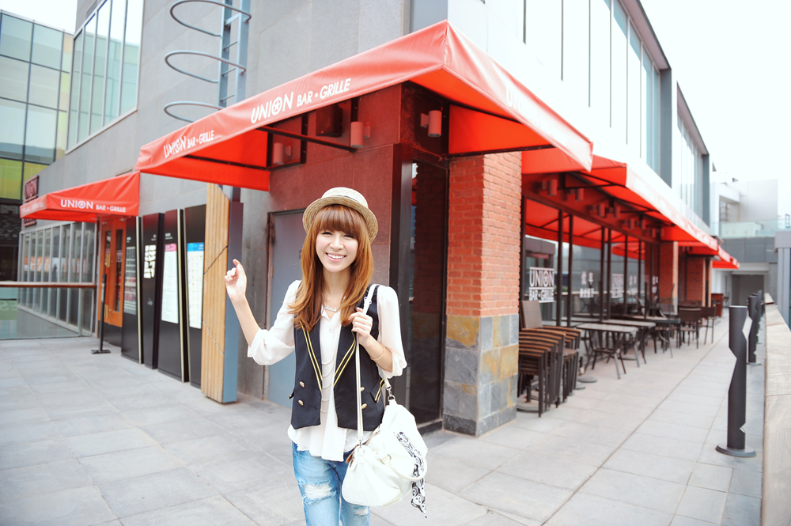

台风登陆吴川，来不及躲避的行人被吹倒。7月22日13时45分，2010年第3号台风“灿都”在吴川市吴阳镇沿海地区登陆。登陆时中心附近最大风力12 级，阵风15级，风速高达35米/秒。据初步统计，全市共93.9万人受灾，倒塌房屋689间，直接经济损失12.48亿元。 台风登陆吴川，来不及躲避的行人被吹倒。7月22日13时45分，2010年第3号台风“灿都”在吴川市吴阳镇沿海地区登陆。登陆时中心附近最大风力12 级，阵风15级，风速高达35米/秒。据初步统计，全市共93.9万人受灾，倒塌房屋689间，直接经济损失12.48亿元。 台风登陆吴川，来不及躲避的行人被吹倒。7月22日13时45分，2010年第3号台风“灿都”在吴川市吴阳镇沿海地区登陆。登陆时中心附近最大风力12 级，阵风15级，风速高达35米/秒。据初步统计，全市共93.9万人受灾，倒塌房屋689间，直接经济损失12.48亿元。 台风登陆吴川，来不及躲避的行人被吹倒。7月22日13时45分，2010年第3号台风“灿都”在吴川市吴阳镇沿海地区登陆。登陆时中心附近最大风力12 级，阵风15级，风速高达35米/秒。据初步统计，全市共93.9万人受灾，倒塌房屋689间，直接经济损失12.48亿元。 台风登陆吴川，来不及躲避的行人被吹倒。7月22日13时45分，2010年第3号台风“灿都”在吴川市吴阳镇沿海地区登陆。登陆时中心附近最大风力12 级，阵风15级，风速高达35米/秒。据初步统计，全市共93.9万人受灾，倒塌房屋689间，直接经济损失12.48亿元。 台风登陆吴川，来不及躲避的行人被吹倒。7月22日13时45分，2010年第3号台风“灿都”在吴川市吴阳镇沿海地区登陆。登陆时中心附近最大风力12 级，阵风15级，风速高达35米/秒。据初步统计，全市共93.9万人受灾，倒塌房屋689间，直接经济损失12.48亿元。
Elie
Saab一直都是明星们最爱的红毯礼服，设计师永远专注于他的礼服设计，Elie
Saab本季的高级定制为女性展现了一个奢华的公主梦，华丽的服饰，奢侈的配饰，闪烁着熠熠光彩，在带给我们炫目耀眼时尚感觉的同时，亦让我们感受到了优雅而生动的女性魅力。一幅幅清新的水彩画，画里走出的是花神般圣洁的身影，轻盈的纱质面料贯穿全场，花朵造型处处可见。

文化艺术类单幅金奖-车模另一面 2010年8月28日，浙江宁波国际汽车博览会，后台休息间隙，24岁的车模紫轩站到椅子上，用手机为同伴拍照。
体育新闻类单幅铜奖-水上飞 2010年10月15日，中国柳州世界水上极速运动大赛第二单元——水上摩托艇世锦赛较量，自由花式选手在比赛中。 
日常生活类单幅银奖-女交警微笑执勤
2010年4月9日下午,在西安市西华门十字，一男子坐在岗台上醉言醉语，岗台上的女警面带微笑照常执勤。随后，交警莲湖大队的男交警赶来，将男子强行带离。本着人性化执法考虑，因该男子的“纠缠”只是醉酒后无意行为，民警将其批评教育后放人。

早上等灯的时候看见这一串脚印，可惜没带相机，只能用手机了。路面的雪清理的太快了，压根儿不像下过雪的样子。朝阳路最近很好走，这两天几乎都是四十多分钟就能到，我很满足，我很欣慰。

早上等灯的时候看见这一串脚印，可惜没带相机，只能用手机了。路面的雪清理的太快了，压根儿不像下过雪的样子。朝阳路最近很好走，这两天几乎都是四十多分钟就能到，我很满足，我很欣慰。
早上等灯的时候看见这一串脚印，可惜没带相机，只能用手机了。路面的雪清理的太快了，压根儿不像下过雪的样子。朝阳路最近很好走，这两天几乎都是四十多分钟就能到，我很满足，我很欣慰。
早上等灯的时候看见这一串脚印，可惜没带相机，只能用手机了。路面的雪清理的太快了，压根儿不像下过雪的样子。朝阳路最近很好走，这两天几乎都是四十多分钟就能到，我很满足，我很欣慰。
早上等灯的时候看见这一串脚印，可惜没带相机，只能用手机了。路面的雪清理的太快了，压根儿不像下过雪的样子。朝阳路最近很好走，这两天几乎都是四十多分钟就能到，我很满足，我很欣慰。
早上等灯的时候看见这一串脚印，可惜没带相机，只能用手机了。路面的雪清理的太快了，压根儿不像下过雪的样子。朝阳路最近很好走，这两天几乎都是四十多分钟就能到，我很满足，我很欣慰。
早上等灯的时候看见这一串脚印，可惜没带相机，只能用手机了。路面的雪清理的太快了，压根儿不像下过雪的样子。朝阳路最近很好走，这两天几乎都是四十多分钟就能到，我很满足，我很欣慰。